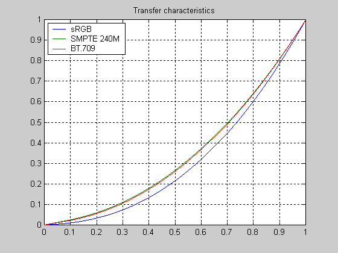

Dither — high-bitdepth tools for AviSynth
Abstract
| Authors: | Firesledge (aka Cretindesalpes) | |
| Version: | 1.27.2 | |
| Download: | http://ldesoras.free.fr/prod.html | |
| Category: | Deep color tools | |
| Requirements: |
| |
| License: | WTFPL |
Table of contents
- Introduction
- Examples of use
- Common parameters
- Filter description
- DitherPost
- DitherBuildMask
- SmoothGrad
- GradFun3
- Dither_box_filter16
- Dither_bilateral16
- Dither_limit_dif16
- Dither_resize16, Dither_resize16nr
- Dither_convert_yuv_to_rgb
- Dither_convert_rgb_to_yuv
- Dither_srgb_display
- Dither_quantize
- Dither_out
- Dither_convey_rgb48_on_yv12
- Dither_removegrain16
- Dither_repair16
- Dither_median16
- DitherTestPatterns
- Dither1Pre, Dither2Pre
- Utility functions
- Dither_get_msb, Dither_get_lsb
- Dither_gen_null_lsb
- Dither_convert_8_to_16
- Dither_crop16
- Dither_addborders16
- Dither_lut8, Dither_lutxy8, Dither_lutxyz8
- Dither_lut16
- Dither_add16, Dither_sub16
- Dither_max_dif16, Dither_min_dif16
- Dither_merge16, Dither_merge16_8
- Dither_y_gamma_to_linear, Dither_y_linear_to_gamma
- Dither_sigmoid_direct, Dither_sigmoid_inverse
- Dither_add_grain16
- Troubleshooting
- Changelog
I) Introduction
This package offers a set of tools to manipulate high-bitdepth (16 bits per plane) video clips. The most proeminent features are color banding artifact removal, dithering to 8 bits, colorspace conversions and resizing.
Additionally, some existing filters (dfttest, MDegrain from MVTools…) have been modified to handle 16-bit clips.
Formats
As Avisynth doesn't support natively high bitdepth, a specific format named “stack16” is introduced. The picture is made of two parts, one containing the highest 8 bits (MSB) stacked on top of another containing the lowest 8 bits (LSB) for each pixel. When previewing the video stored in stack16 format, the top part looks quite like the original picture and the bottom one generally looks like psychedelic garbage.
Some functions may also use an MSB/LSB decomposition as interleaved pictures, but this format should be considered deprecated and is only supported for backward compatibility.
Finally, there are a few other formats made specifically for encoding, allowing Avisynth to send more than 8 bits per plane by faking raw data characteristics on the codec side.
When working with 16-bit clips, it’s important to know exactly which format a function takes as input and output. Specifically, you cannot process directly 16-bit clips with the usual 8-bit Avisynth filters, because they will interpret the LSB and MSB parts as regular data and mess everything. However there are various workarounds to mix 8- and 16-bit processing with minimal quality loss, please refer to the example section.
Outputing high-bitdepth clips to encode in 10 bits or more has become
possible and is now quite common and supported by various encoding tools.
However there is no practical mean to load a high-bitdepth media
into Avisynth at this time.
Regardless, SAPikachu hacked FFmpegSource2 to load 10-bit clips
using a special parameter enable10bithack=true, resulting in
stack16 output.
See the latest ffms2 release here.
Patch source code here.
Debanding and dithering
The main reason this package has been made is to address the color banding problem. Color banding generally occurs on low gradients or almost flat colors covering large areas, which is often the case in cartoons and animes. Because of the limited video bitdepth, the gradient color values show staircases in its curve, making apparent the discontinuity between two adjacent color steps.
These artifacts can appear at various stages:
- It can be already present in the source,
- created during a filtering pass
- or added by the final codec because of bitrate starvation or inappropriate encoding settings.
Debanding functions helps to remove the banding from a source. Using high-bitdepth processing prevents the banding from appearing during filtering. Finally, appropriate dithering helps to avoid banding during the conversion to 8 bits and the encoding stage.
Generally, film grain and video noise act as natural dithering. Filtering them out also removes this dithering and thus creates color banding. That’s why some denoising filters have been modified, in order to work as reversed dithering, outputing smooth 16-bit gradients from a noisy 8-bit source.
Colorspace conversions
Using 16-bit data helps working with curves without creating steps or holes in the histogram, which often are a sign of color banding. Colorspace conversion has the same kind of issues, and benefits from accurate 16-bit calculations too.
It makes possible to handle the picture information in “linear light” (without gamma correction), increasing the accuracy of some operations when processing pictures exhibiting high contrats.
Content
The functions are spread across dither.dll and dither.avsi. There are other files:
- mt_xxpand_multi.avsi, containing utility functions not specifically related to dithering (they rather are Masktools extensions).
- avstp.dll, to make dither.dll support native multi-threading. If this avstp is missing, the functions will still work but will be limited to single-threading only.
You may already have obtained them by other means. Put all these files in your AviSynth 2.5\plugins\ directory. The package also contains “mod16”-modified denoising plug-ins to directly generate 16-bit data in a much more efficient way.
Functions implemented in dither.dll should be compatible with all the MT modes (including mode 1) and accept any planar colorspace. On this topic, scripted functions are limited by their external dependencies. YV12 colorspace and MT mode 2 should always work fine, anyway.
Considerations
If you’re going multi-threaded using the MT command, make sure
you have set splitvertical=true for two reasons:
- The functions may have to change the clip height
- Stacked LSB and MSB of a given pixel must not be separated.
II) Examples of use
Use of modified denoisers
There are specifically modified denoising plug-ins allowing 16-bit
output (I called them “mod16”), currently dfttest,
MDegrain1, MDegrain2 and MDegrain3.
They are included in the Dither package and can safely replace the regular
versions, when up-to-date.
Use the named parameter lsb=true to enable 16 bit output.
Then, MSB is stacked on top of the LSB.
dfttest (lsb=true) # The output contains stacked MSB-LSB on the same frame. DitherPost ()
Transdithering using a non-modified temporal denoiser
An effective but very slow way to remove low noise while avoiding
the introduction of color banding artefacts and keeping an excellent
compressability.
Actually, better quality could be achieved with motion compensation but
this is not the scope of this example.
It shows how to use Dither2Pre to create a 16-bit clip with
a 8-bit denoiser.
Here, the default TTempSmooth parameters have been multiplied
by 4 to adapt to the internal scale of pixel values.
o = last Dither2Pre ( \ "TTempSmooth (lthresh=16, cthresh=20, lmdiff=8, cmdiff=12, scthresh=48)", \ overlap=0, tvopt=true) ref = last mask = DitherPost (mode=-1).mt_edge (mode="min/max", thY1=0, thY2=255, thC1=0, thC2=255) mask = mask.mt_binarize (1, u=3, v=3).mt_expand (u=3, v=3).mt_expand (u=3, v=3) mask = mask.RemoveGrain (20).RemoveGrain (20) Dither_bilateral16 (radius=16, thr=1.5, wmin=1, flat=0.75) Dither_bilateral16 (radius=8, thr=2.5, wmin=1, flat=0.33, ref=ref) Dither_limit_dif16 (ref, thr=0.3) DitherPost () mt_merge (last, o, mask, u=3, v=3)
Combining 8- and 16-bit processing
Generic method
There is often a need to mix 8- and 16-bit processing because only a few filters are available in 16 bits.
Below is a little template to achieve this.
This is not a perfect solution but work quite well.
It’s possible to lower a bit the Dither_limit_dif16 thr parameter.
You can reapeat the steps as many times you need to alternate 8 and 16
bits.
dfttest (lsb=true) # or whatever generating stack16 data # Insert 16-bit filters here s16 = last DitherPost (mode=-1) # Insert 8-bit filters here Dither_convert_8_to_16 () s16.Dither_limit_dif16 (last, thr=1.0, elast=2.0) # Insert 16-bits filters again… # Finally DitherPost () # or Dither_out ()
Filtering in 16 bits with basic sharpening
The example below shows how to use a 8-bit sharpener with a 16-bit clip. This method guarantees that the dithering pattern will not be sharpened. This is an alternative method to the proposed above. The rationale is: going back to 8-bit without dithering (mode = -1), doing stuff, compute the difference between processed and unprocessed clips, dither the 16-bit clip and add the previously computed difference to the result. This method can be applied to some other kinds of processing.
dfttest (lsb=true) f = DitherPost (mode=-1) s = f.Sharpen () d = mt_makediff (s, f) DitherPost () mt_adddiff (last, d, u=2, v=2)
Debanding a clip
Without filtering:
GradFun3 ()
Advanced multi-pass filtering for a source containing both noise and banding. This script requires the modified version of the MVTools2.
# Your favourite 8-bit denoiser here, doing the main job denoised = dfttest (sigma=16) # Restores a bit of noise mt_lutxy (last, denoised, expr="x y < y 1 - x y > y 1 + y ? ?", y=3, u=3, v=3) super = last.MSuper () super_a = denoised.MSuper () # You could also reuse the vectors found in a previous processing stage vf1 = super_a.MAnalyse (isb=false, delta=1, overlap=4, blksize=16) vb1 = super_a.MAnalyse (isb=true, delta=1, overlap=4, blksize=16) # Turns remaining noise into 16-bit gradients cf1 = MCompensate (super, vf1, thSAD=200) cb1 = MCompensate (super, vb1, thSAD=200) Interleave (cf1, last, cb1) dfttest (sigma=1.0, tbsize=3, lsb=true) SelectEvery (3, 1) # Additional smoothing pass and back to 8 bits GradFun3 (thr=0.25, lsb_in=true)
When a clip contains sharpening overshoots, the color banding may be
resilient to GradFun3, even with high thresholds (> 1.5).
The following script helps to remove it without loosing too much details.
You may have to adapt some values.
Display mask_details.GreyScale() to check the mask.
It shouldn’t show the color band boundaries (or just marginally).
lvl_overshoot = 3.5
lvl_details = 2
o = last
w = Width ()
h = Height ()
edges = mt_edge (mode="prewitt", thY1=0, thY2=255)
details = mt_edge (mode="min/max", thY1=0, thY2=255)
mask_lines = edges.mt_lut ("x 6 - 50 *")
mask_lines = mask_lines.mt_expand ().mt_expand ().mt_expand ().mt_expand ()
mask_overshoot = edges.mt_lut ("x "+String(lvl_overshoot)+" - 2 ^ 40 *")
mask_overshoot = mask_overshoot.mt_inpand ().RemoveGrain (12, -1)
mask_overshoot = mt_logic (mask_overshoot, mask_lines, mode="max")
mask_details = details.mt_binarize (lvl_details)
mask_details = mask_details.RemoveGrain (21 ,-1).mt_expand ()
mask_final = mt_logic (mask_overshoot, mask_details, mode="min")
mask_final = mask_final.RemoveGrain (20, -1).RemoveGrain (20, -1)
o
BicubicResize (w/16 * 4, h/16 * 4, 1, 0).BicubicResize (w, h, 1, 0)
GradFun3 (radius=4, thr=0.6, mask=0, mode=6) # Huge blur
mt_merge (last, o, mask_overshoot, luma=true) # W/o overshoot
GradFun3 (thr=0.6, mask=0) # W/o banding
mt_merge (last, o, mask_final, luma=true) # Details protected
Working with curves
The following examples are designed for TV-range data (luma in 16–235).
Denoises very slightly, debands and protects the darkest shades by increasing the dynamic range for low luma values:
a = 0.5 # The smaller, the greater the protection
sa = String (a)
sd = String (Pow (219*256, 1 - 1.0/a))
dfttest (sigma=0.25, lsb=true)
Dither_lut16 ("x 4096 - 0 max "+sd+" / "+sa+" ^", y=3, u=2, v=2) # Direct
SmoothGrad ()
Dither_lut16 ("x 1 "+sa+" / ^ "+sd+" * 4096 +", y=3, u=2, v=2) # Inverse
DitherPost ()
Blending 8-bit pictures in linear light:
# Blending amount for the first clip bl = 0.75 bls1 = String ( bl) bls2 = String (1 - bl) # 8-bit clips converted to linear 16-bit full range (gamma undone) ug = " 16 - 0 max 1.41624 / 2.2 ^ " # Redo the gamma, result in 16 bits YUV rg = " 0.454545 ^ 362.5585 * 4096 +" # Blend Dither_lutxy8 (src1, src2, \ expr ="x " + bls1 + " * y " + bls2 + " * + 256 *", \ yexpr="x" + ug + bls1 + " * y" + ug + bls2 + " * +" + rg, \ y=3, u=3, v=3) # Back to 8 bits DitherPost ()
Resizing in 16 bits
Simple resize:
Dither_convert_8_to_16 () Dither_resize16 (1280, 720) DitherPost ()
Sharpening the luma using the convolver of the resizer:
Dither_convert_8_to_16 () Dither_resize16 (Width (), Height () / 2, kernel="impulse -1 6 -1", \ fh=-1, fv=-1, cnorm=true, center=false, y=3, u=2, v=2) DitherPost ()
Restoring the original size of a picture using kernel inversion:
# Input in 8 bits w = Width () # Original size h = Height () # BilinearResize (w * 3 / 2, h * 3 / 2) # Upscale Dither_convert_8_to_16 () Dither_resize16 (w, h, kernel="bilinear", invks=true) DitherPost ()
Resizing in linear light with protection against ringing:
# Y'Cb'Cr' input in 16 bits Dither_convert_yuv_to_rgb (matrix="709", output="rgb48y", lsb_in=true) Dither_y_gamma_to_linear (tv_range_in=false, tv_range_out=false, curve="709", sigmoid=true) Dither_resize16nr (1280, 720, kernel="spline36") Dither_y_linear_to_gamma (tv_range_in=false, tv_range_out=false, curve="709", sigmoid=true) r = SelectEvery (3, 0) g = SelectEvery (3, 1) b = SelectEvery (3, 2) Dither_convert_rgb_to_yuv (r, g, b, matrix="709", lsb=true) # Y'Cb'Cr' output in 16 bits
Colorspace conversions
Color conversions of 8-bit clips:
BlankClip () # Assumes RGB Dither_convert_rgb_to_yuv () Dither_convert_yuv_to_rgb ()
Upscaling in 16 bits a SD video to HD with correct color matrix conversion (slow way), output dithered to 8 bits ready for encoding:
MPEG2Source ("video_sd.d2v")
Dither_convert_8_to_16 ()
Dither_resize16 (1280, 720)
Dither_convert_yuv_to_rgb (matrix="601", output="rgb48y", lsb_in=true)
r = SelectEvery (3, 0)
g = SelectEvery (3, 1)
b = SelectEvery (3, 2)
Dither_convert_rgb_to_yuv (r, g, b, matrix="709", lsb=false, mode=0)
Another possibility, with the resizing function operating in RGB land:
MPEG2Source ("video_sd.d2v")
Dither_convert_yuv_to_rgb (matrix="601", output="rgb48y")
Dither_resize16 (1280, 720, y=3, u=1, v=1)
r = SelectEvery (3, 0)
g = SelectEvery (3, 1)
b = SelectEvery (3, 2)
Dither_convert_rgb_to_yuv (r, g, b, matrix="709", lsb=false, mode=0)
Displaying a preview of a YUV stream with automatic matrix detection, conversion to sRGB with correct transfer curve, non-ringing scaling to 1080 lines in RGB linear colorspace and anamorphic correction:
MPEG2Source ("anything.d2v")
Dither_srgb_display (h=1080, dar=1.778) # or 1.333 for 4:3 AR
Special output to high bitdepth
Simple denoising, quick debanding and direct 16-bit output for x264-10bit.
Make sure reading the important remarks in the
Dither_out function description:
dfttest (lsb=true) SmoothGrad () Dither_out ()
Same as above, but outputing 10-bit data aligned on 16-bit words
(still needs --input-depth 16 in x264.
Use reducerange=true for real 10-bit input):
dfttest (lsb=true) SmoothGrad () Dither_quantize (10, mode=6) Dither_out ()
Simple debanding with RGB48 output (needs specific encoding step):
Dither_convert_8_to_16 () SmoothGrad () Dither_convert_yuv_to_rgb (lsb_in=true, output="rgb48y") r = SelectEvery (3, 0) g = SelectEvery (3, 1) b = SelectEvery (3, 2) Dither_convey_rgb48_on_yv12 (r, g, b)
III) Common parameters
Exactly like Masktools 2, Dither has functions sharing common parameters.
int y (3), int u (3), int v (3)
These three values describe the actual processing mode that is to be used on each plane / channel. Here is how the modes are coded:
| −255…0 or −65535…0 | All the pixels of the plane will be set to −x. The range depends whether the output clip is a stack16 or a regular 8-bit clip. |
| 1 | The plane will not be processed. That means the content of the plane after the filter is pure garbage. |
| 2 | The plane of the first input clip will be copied. |
| 3 | The plane will be processed with the processing the filter is designed to do. |
| 4 | When applicable, the plane of the second input clip will be copied. |
| 5 | When applicable, the plane of the third input clip will be copied. |
Unlike Masktools 2, all the planes are processed by default.
IV) Filters description
DitherPost
DitherPost ( clip m, clip clsb (undefined), int mode (0), float ampo (1), float ampn (0), int pat (1), bool dyn (false), bool prot (false), clip mask (undefined), float thr (-1), bool stacked (true), bool interlaced (false), int y (3), int u (3), int v (3), bool staticnoise (false), bool slice (true) )
Adds the dither, turning a 16-bit clip generated by
Dither1Pre, Dither2Pre or a mod16 denoiser into
a regular 8-bit clip.
Pure ordered dithering seems to be retained better than noise or error diffusion during video compression. Therefore this is the recommended method to avoid color banding, unless you encode at very high bitrates. If you don’t care about video compression, error diffusion gives the most accurate results. To avoid discontinuities between purely flat areas and dithered areas, you can add a bit of noise.
Important note: the colorbanding removal is not done by the dithering stage, but by the filtering stage. The latter rebuilds the fine gradients in the 16-bit land. The dithering helps converting the picture data to something watchable, in 8 bits, while preserving a preceptually high colordepth, thus preventing the colorbanding to appear.
m
If clsb is defined, contains the main picture data (MSB). If clsb is not defined, it contains both MSB and LSB clips as interleaved frames (same format as the first pass output), or as stacked frames, depending on the stacked value.
clsb
Contains the residual information (LSB) if defined.
mode
Dithering method:
| −1 | no dither, round to the closest value |
| 0 | 8-bit ordered dither + noise. |
| 1 | 1-bit dither |
| 2 | 2-bit dither, light |
| 3 | 2-bit dither, medium |
| 4 | 2-bit dither, strong |
| 5 | 2-bit dither, stronger |
| 6 | Serpentine Floyd-Steinberg error diffusion + noise. Well-balanced algorithm. |
| 7 | Stucki error diffusion + noise. Looks “sharp” and preserve light edges and details well. |
| 8 | Atkinson error diffusion + noise. Generates distinct patterns but keeps clean the flat areas. |
Modes 1 to 5 have no real interrest over mode 0 and can be considered deprecated.
ampo
The ordered dither peak-to-peak amplitude, on an 8 bit scale. ≥ 0. On error diffusion algorithms, it increases the collected error amount, helping to extend the range of the dithering while preserving its natural pattern (especially Atkinson’s). This gives a better looking result than just adding noise.
ampn
The noise peak-to-peak amplitude, on an 8 bit scale. ≥ 0. Currently, the maximum value is 4.
pat
is the dither pattern type for 2-bit dither:
| 0 | Regular |
| 1 | Alternate V |
| 2 | Alternate H |
dyn
Indicates if the ordered dither pattern is dynamic. If so, the pattern is rotated each frame.
prot
Enables the protection against MSB-LSB inconsistencies, which can occur when the main picture (MSB only) is processed.
mask
If defined, dithering is applied where the pixel
values are lower than 128. Must be defined for all the planes. You can build
the mask with DitherBuildMask.
thr
Threshold below which no dither occurs, in pixel value units on an 8 bit scale. It helps to keep calm flat areas where the LSB content is just low-level residual noise. Works only for dithering mode 0. Ranges from 0 to 0.5. -1 = disabled.
stacked
When clsb is undefined, true indicates that the clip is composed of the MSB part stacked on top of the LSB part. false indicates that MSB and LSB are interleaved.
interlaced
Indicates that the clip is interlaced and that the dither should be applied on each field separately.
staticnoise
If set to true, the noise generated with
ampn is static.
slice
Set it to false to disable plane slicing.
Slicing is used in multithreading and can create artefacts at slice boundaries
with error-diffusion algorithms.
Disabling slicing reduces the threading preformances.
Category: dll.
DitherBuildMask
DitherBuildMask ( clip cnew, clip cold (undefined), int edgelvl (8), int radius (2) )
This function builds a mask to use in DitherPost.
It helps avoiding artifacts during the dithering when the picture was
processed between the DitherXPre and DitherPost
operations.
It also helps to preserve detailed areas from dithering.
Call this function right before DitherPost and pass the result in
the mask parameter.
cnew
The MSB part of the processed clip.
cold
The original MSB part of the clip. If this argument is specified, cold must be of the same size as cnew. Pixel which are different are set in the mask and are expanded like the edges.
edgelvl
Threshold for the edge detection (0–255). The lower, the more edges it detects.
radius
Minimum distance in pixels separating the dithered zones from the detected edges and potential artifacts (1–8).
Category: script.
SmoothGrad
SmoothGrad ( clip m, clip clsb (undefined), int radius (16), float thr (0.25), bool stacked (true), clip ref (undefined), float elast (3), int y (3), int u (3), int v (3) )
SmoothGrad smooths the low gradients or flat areas of a
16-bit clip.
It proceeds by applying a huge blur filter and comparing the result with the
input data for each pixel.
If the difference is below the specified threshold, the filtered version is
taken into account, otherwise the input pixel remains unchanged.
m
If clsb is defined, contains the main picture data (MSB). If clsb is not defined, it contains both clips. In this case, its format depends on the stacked parameter.
clsb
Contains the residual information (LSB) if defined.
radius
Radius in pixels of the smoothing filter. > 0.
thr
Threshold between reference data and filtered data, on an 8-bit scale. > 0.
stacked
When clsb is undefined, true indicates that the clip is composed of the MSB part stacked on top of the LSB part. False indicates that MSB and LSB are interleaved.
ref
Reference clip for the filter output comparison.
Specify here the input clip when you cascade several SmoothGrad
calls.
It is always a stacked or interleaved LSB/MSB combination, depending on the
stacked parameter.
When undefined, the input clip is taken as reference.
elast
To avoid artifacts, the threshold has some kind of elasticity. Value differences falling over this thershold are gradually attenuated, up to thr * elast. > 1.
Category: dll.
GradFun3
GradFun3 ( clip src, float thr (0.35), int radius (12), float elast (3), int mask (2), int mode (undefined), float ampo (undefined), float ampn (undefined), int pat (undefined), bool dyn (undefined), float dthr (undefined), int smode (0), float wmin (1.0), float thr_det (2), float thr_edg, int debug (0), float subspl (0), bool lsb (false), bool lsb_in (false), bool staticnoise (undefined), float thrc (thr), int radiusc (radius), float elastc (elast) int y (3), int u (3), int v (3), clip ref, bool slice (true) )
This function is equivalent to GradFun2db and helps removing the existing color banding from a source, dithered or not. The default dithering pattern is ordered and should be more resilient to lossy codec quantification than the other patterns. But to keep all the advantages of the gradient smoothing and dithering, you should make GradFun3 the very last filter of your encoding chain, or use masking methods to safeguard the dither patterns.
src
The input clip.
thr, thrc
Filter threshold. Below this value, the changes made by the banding filter on pixel values are not attenuated. The higher, the more effective the filter will be, but details will be smoothed and artifacts will appear near the edges between two flat areas. thrc is the parameter for the chroma planes. Keep it below 1.0. Range: 0.1–10.0.
radius, radiusc
Filter radius, in pixels. Basically, this is the extent of artifical gradient introduced on the band edges. radiusc is the parameter for the chroma planes. The default value is tuned for SD video and 720p, but you might probably want to increase it to 16 for 1080p video. Range: 1–68 for smode=0, 1–128 for smode=1 and ≥ 3 for smode=2.
elast, elastc
Elasticity of the filter attenuation. It’s a multiplier on the threshold. A pixel difference above thr * elast won’t have any effect. elastc is the parameter for the chroma planes. Good values are in the range 1.25–4.
mask
Depth in pixels of the detail/edge masking. Set it to 0 to disable it.
thr_det
Local contrast threshold for detail detection and masking. The lower, the better the details will be protected, but the lower the smoothing efficiency. Must be > 0, and above the height of a color-banding step. When kept unspecified, it more or less follows the main debanding threshold thr.
thr_edg
Unused. Kept for backward compatibility purpose.
smode
Indicates which filter to use for gradient smoothing.
| 0 | Box filter. Very fast, whatever the radius. Drawback: can introduce slight but large halos, especially with high thresholds. |
| 1 | dfttest. Much slower, but less prone to artefacts and halos than the box filter. This is the prefered mode for high quality results with acceptable processing time.
|
| 2 | Bilateral filter. Very slow, and slower for bigger radius, but much less prone to artefacts than the box filter. Almost haloless, even for high thresholds. |
| 3 | Undocumented mode. |
wmin
For smode 2 (bilateral filter), this parameter prevents the filter to totally flatten the small areas of nearly uniform color. It ranges between 0.0 (normal bilateral filtering) and 1.0 (protection fully activated).
debug
| 0 | Normal output, without debugging information. |
| 1 | Shows the detail/edge mask. |
subspl
Subsampling rate for the bilateral filter. Set it to 0 to adjust it automatically to the radius. Disable it with 1. Normal subsampling values should be greater or equal to 4. The maximum value depends on the radius.
lsb
When set to true, leaves the 16-bit data instead of dithering them to 8 bits.
lsb_in
When set to true, works on 16-bit input.
ref
Reference clip used to limit changes. Allows cascading multiple GradFun3 calls (for example by combining small and large radius settings) without going too far from the original picture. ref must have the same format as the input clip. When not specified, the reference clip is the input.
other parameters
The other parameters are directly transmitted to
DitherPost. dthr is translated to thr.
Here is a table showing the equivalent parameters in
GradFun3 and GradFun2DBmod:
GradFun3 |
Conversion | GradFun2DBmod |
|---|---|---|
| thr | = 0.3 * | thr |
| mask | = | radius |
| thr_det | = | range |
Category: script.
Dither_box_filter16
Dither_box_filter16 ( clip src, int radius (16), int y (3), int u (3), int v (3) )
Performs a box filtering on the input clip. Box filtering consists in averaging all the pixels in a square area whose center is the output pixel. This filter is very fast to compute and its speed doesn’t depend on its radius. You can approximate a large gaussian filtering by cascading a few box filters.
Both input and output are vertically stacked 16-bit clips.
src
Input clip to be filtered.
radius
Size of the averaged square.
Its width is radius*2-1.
Range: 2–91.
Category: dll.
Dither_bilateral16
Dither_bilateral16 ( clip src, clip ref (undefined), int radius (16), float thr (2.5), float flat (0.4), float wmin (0.0), float subspl (0), int y (3), int u (3), int v (3) )
Performs a bilateral filtering on the input clip. A bilateral filter is like a gaussian filter, but values of the filtering window are weighted with a gaussian curve, depending of their proximity with the center pixel. The closer the values, the more weight has the value in the final sum. Bilateral filters are very efficient to remove noise on flat areas and smooth gradients without being disturbed by surrounding areas of different colors or high contrast lines. The result of a bilateral filtering is indeed cartoonish and waxy, therefore it does a very good job at gradient smoothing, without producing halos like the box filter. However, this is a very slow filter.
Actually, this implementation is an approximation of a bilateral filter, like many other image processing tools do. The spatial weighting is not a gaussian curve but a box, and the value weighting is a trapezoid. Cascading several function calls leads to a better approximation of the gaussian shape.
If you plan to use this filter for debanding, do not use it alone.
It has no protection against oversmoothing.
You should first apply Dither_limit_dif16 on its result, exactly
like with Dither_box_filter16, then use a mask to protect the
finest details.
The GradFun3 code is a good example to refer to.
This function works only on 16-bit stacked clips.
If you MT() the function, make sure to have an horizontal
overlap greater or equal to twice the radius.
Anyway, this is certainly not the most efficient way to get the processing
multithreaded.
Prefer using SetMTMode 1 or 2.
src
Clip to be filtered.
ref
When computing the value weighting, pixels of this clip are taken for reference. When cascading several calls to the function, set the original clip as reference to avoid the result drifting to something superflat.
radius
Size of the averaged square.
Its width is radius*2-1.
Must be ≥ 2.
thr
Pixels whose difference of value with the center pixel is over thr will be discarded. The parameter ranges on an 8 bit scale. Must be stricly positive.
flat
Determines the shape of the trapezoid weighting of the value differences. Close to 0, the shape is triangular. Close to 1, the shape is a rectangle, like a box filter with a hard threshold. Range: 0.0–1.0
wmin
The partial or missing pixels are completed with the center pixel to match the wmin fraction of the filter window at full weight. At 0.0, it acts like a classic bilateral filter. Raising the total weight helps preventing the filter to completely flatten the small areas of close colors. Range: 0.0–1.0. Values over 1 are tolerated, they are equivalent to keep wmin to 1 while reducing the overall strength of the filter.
subspl
Subsampling rate. When this parameter is activated, only a few pixels randomly chosen from the search window are taken into account. This leads to significative speed improvment, with only a minor quality loss. A value equal to twice the radius looks like a good compromise. Normal subsampling values should be greater or equal to 4. Below, subsampling is disabled. Set subspl to 0 to let the filter adjust the subsampling rate automatically, depending on the radius. The number of subsampling points is limited to 4096. The random pattern is the same for all the frames and planes.
Category: dll.
Dither_limit_dif16
Dither_limit_dif16 ( clip flt, clip src, clip ref (undefined), float thr (0.25), float elast (3.0), int y (3), int u (3), int v (3) )
This function compare a filtered clip with its original version, and
keeps the filtered pixels only if the difference between the filtered pixel
and the reference pixel is below the given threshold.
This is a building block of SmoothGrad and
GradFun3.
This function works only on 16-bit stacked clips.
flt
Filtered clip.
src
Original clip.
ref
Reference clip for the filter output comparison. Specify here the first original clip when you cascade several limited filters. When undefined, the src clip is taken as reference.
thr
Thershold between reference data and filtered data, on an 8-bit scale. > 0.
elast
To avoid artifacts, the threshold has some kind of elasticity. Value differences falling over this thershold are gradually attenuated, up to thr * elast. > 1.
Category: dll.
Dither_resize16, Dither_resize16nr
Dither_resize16 (
clip src,
int width,
int height,
float src_left (0),
float src_top (0),
float src_width (0),
float src_height (0),
string kernel ("spline36"),
float fh (1.0),
float fv (1.0),
int taps (4),
float a1 (undefined),
float a2 (undefined),
float a3 (undefined),
int kovrspl (1),
bool cnorm (true),
bool center (true),
string cplace ("MPEG2"),
int y (3),
int u (3),
int v (3),
string kernelh (""),
string kernelv (""),
float totalh (0),
float totalv (0),
bool invks (false),
bool invksh (invks),
bool invksv (invks),
int invkstaps (5),
string cplaces (cplace),
string cplaced (cplace),
string csp (undefined)
)
Dither_resize16nr ( … (same arguments as Dither_resize16) … bool noring (true) )
Resizes a 16-bit clip.
The function can resize interlaced content, but only if presented
as separated, interleaved fields.
It uses the Avisynth parity information to detect fields and maintain the
correct chroma and luma positions.
If this behaviour is not desired, add an AssumeFrameBased()
before the resizing call.
The function can also be used to compute horizontal and vertical convolutions. If you do so, don’t forget to set:
- fh or fv to -1 to make sure the clip is processed even if its size doesn’t change,
- cnorm to false to avoid automatic kernel normalisation if your impulse is already normalised, or specify totalv or totalh if the normalisation factor is not the sum of the impulse
- and center to false to keep the desired spacing between the sampling points.
This function works only on 16-bit stacked clips.
The Dither_resize16nr function is a wrapper over
Dither_resize16, adding a ringing-cancellation algorithm.
src
Clip to be resized. Mandatory.
width, height
New picture width and height in pixels, > 0. Mandatory.
src_left, src_top
Coordinate of the top-left corner of the picture sub-area used as source for the resizing. They can be fractional. If negative, the picture is extended by replicating the left pixel column.
src_width, src_height
Size in pixels of the sub-area to resize.
They can be fractional.
If 0, the area has the same size as the source clip.
If negative, they define coordinates relative to the bottom-right corner, in
a Crop-like manner.
kernel
Kernel used by the resizer. Possible values are:
"point" | Nearest neighbour interpolation. Same as PointResize(). |
"rect" or "box" | Box filter. |
"linear" or"bilinear" | Bilinear interpolation. Same as BilinearResize(). |
"cubic" or"bicubic" | Bicubic interpolation. Same as BicubicResize(). The b and c variables are mapped on a1 and a2 and are both set to 1/3 by default. |
"lanczos" | Sinc function windowed by the central lobe of a sinc. Use taps to specify its impulse length. Same as LanczosResize(). |
"blackman" | Blackman-Harris windowed sinc. Use taps to control its length. Same as BlackmanResize(). |
"blackmanminlobe" | Another kind of Blackman windowed sinc, with a bit less ringing. Use taps for you know what. |
"spline16" | Cubic spline based kernel, 4 sample points. Same as Spline16Resize(). |
"spline36" | Spline, 6 sample points. Same as Spline36Resize(). |
"spline64" | Spline, 8 sample points. Same as Spline64Resize(). |
"spline" | Generic splines, number of sample points is twice the taps parameter, so you can use taps = 6 to get a Spline144Resize() equivalent. |
"gauss" or"gaussian" | Gaussian kernel. The p parameter is mapped on a1 and controls the curve width. The higher p, the sharper. It is set to 30 by default. This resizer is the same as GaussResize(), but taps offers a control on the filter impulse length. For low p values (soft and blurry), it’s better to increase the number of taps to avoid truncating the gaussian curve too early and creating artifacts. |
"sinc" | Truncated sinc function. Use taps to control its length. Same as SincResize(). |
"impulse" | Offers the possibility to create your own kernel (useful for convolutions). Add your coefficents in the string after “impulse”, separated with spaces (ex: "impulse 1 2 1"). The number of coefficients must be odd. The curve is linearly interpolated between the provided points. You can oversample the impulse by setting kovrspl to a value > 1. |
fh, fv
Horizontal and vertical frequency factors, also known as inverse kernel support. They are multipliers on the theoretical kernel cutoff frequency in both directions. Values below 1.0 spatially expand the kernel and blur the picture. Values over 1.0 shrink the kernel and let higher frequencies pass. The result will look sharper but more aliased. The multiplicator is applied after the kernel scaling in case of downsizing. Negative values force the processing, even if the horizontal size doesn’t change. The filter will use the absolute parameter value.
taps
Some kernels have a variable number of sample points, given by this parameter. Actually this counts half the number of lobes (or equivalent) ; in case of downscaling, the actual number of sample points may be greater than the specified value. Range: 1–128
a1, a2, a3
Specific parameters, depending on the selected kernel.
kovrspl
Specifies here how many times the kernel is oversampled when you provide a custom impluse response. ≥ 1.
cnorm
If set to true, the impulse sum is normalised to 1 for each
pixel.
This is the normal behaviour when resizing, to make sure the energy is
constant for all pixels.
If you use the resizer as a convolution engine, it is advised to disable the
normalisation.
center
Like the Avisynth resizers, this resizer preserves the position of the
picture center.
Disable this parameter if you may want to resize by preserving the top-left
corner position.
Similarly, if you are convolving without resizing, setting it to
false ensures you that the same kernel will be applied to all
pixels.
cplace, cplaces, cplaced
Placement of the chroma samples. cplaces and cplaced allow specifying different placements for source and destination clips and take precedence over cplace. Can be one of these strings:
"MPEG1" | 4:2:0 subsampling used in MPEG-1. Chroma samples are located on the center of each group of 4 pixels. |
"MPEG2" | Subsampling used in MPEG-2 4:2:x and most other formats. Chroma samples are located on the left pixel column of the group. |
"DV" | For 4:2:0 modes, it’s like MPEG-2 but U and V channels are “co-sited” vertically: V on the top row, and U on the bottom row. For 4:1:1, chroma is located on the leftmost column. |
The chroma placement is ignored when center is set to
false or kernel to "point".
You’ll find below an overview of common chroma placement and subsampling
combinations:

kernelh, kernelv
kernel parameter specialisation for a given direction (horizontal or vertical). An empty string means that the kernel value is used.
totalh, totalv
When cnorm is activated, these parameters specify the
normalisation value for the corresponding kernel.
0 means that the normalisation value is the sum of the coefficients.
The Masktools’mt_convolution function has a single parameter
for this use: total = totalh × totalv.
Because the convolution is computed with floating point data, there is no
saturation of intermediate results, therefore the balance between
totalh and totalv is not important, only their product
will be taken into account.
invks, invksh, invksv
Activates the kernel inversion mode for the specified direction
(use invks for both).
Inverting the kernel allows to “undo” a previous upsizing by
compensating the loss in high frequencies, giving a sharper and more accurate
output than classic kernels, closer to the original.
This is particularly useful for clips upscaled with a bilinear kernel.
All the kernel-related parameters specify the kernel to undo.
The target resolution must be as close as possible to the initial
resolution.
The kernel inversion is mainly intended to downsize an upscaled picture.
Using it for upsizing will not restore details but will give a sligthly
sharper look, at the cost of a bit of aliasing and ringing.
This mode is somewhat equivalent to the debilinear
plug-in but works with a different principle.
invkstaps
In kernel inversion mode (invks=true), this parameter sets the number of taps for the inverted kernel. Use it as a tradeoff between softness and ringing. Range: 1–128
csp
Target colorspace. Can only change the chroma subsampling. You can convert only to a planar colorspace, keeping the same number of planes. Supporte values:
"YV12" | 4:2:0 |
"YV16" | 4:2:2 |
"YV24" | 4:4:4 |
"YV411" | 4:1:1 |
"Y8" | No chroma |
Category: dll.
noring
A ringing cancellation algorithm is additionnaly used when set to true. Note: the ringing cancellation actually works only for low scaling ratios.
Category: script.
Dither_convert_yuv_to_rgb
Dither_convert_yuv_to_rgb (
clip src,
string matrix (undefined),
bool interlaced (false),
bool tv_range (true),
string cplace ("MPEG2"),
string chromak ("bicubic"),
float fh (undefined),
float fv (undefined),
int taps (undefined),
float a1 (undefined),
float a2 (undefined),
float a3 (undefined),
bool lsb_in (false),
int mode (undefined or 6),
float ampn (undefined or 0.5),
string output ("rgb32"),
int ampo (undefined),
bool staticnoise (undefined),
bool noring (false),
bool slice (undefined)
)
Converts a YUV clip to RGB using high bitdepth calculations. By default, 8 bit RGB output is dithered using error diffusion + noise to get the maximum visual quality.
src
An 8 or 16-bit YUV clip to be converted to RGB.
If the clip is 16-bit stacked, set the lsb_in parameter to
true.
matrix
The matrix used to convert the Y’CbCr pixels to computer RGB. Possible values are:
"601" | ITU-R BT.601 / ITU-R BT.470-2 / SMPTE 170M. For Standard Definition content. |
"709" | ITU-R BT.709. For High Definition content. |
"2020" | ITU-R BT.2020, non constant luminance mode. For UHDTV content. |
"240" | SMPTE 240M |
"FCC" | FCC (where does that come from?) |
"YCgCo" | YCgCo |
When the parameter is not defined, ITU-R BT.601 and ITU-R BT.709 are automatically selected depending on the clip definition (considered as HD if ≥ 600 lines).
interlaced
Indicates that the input clip is interlaced.
tv_range
true if input clip has TV range pixel values,
false if it uses the full range (PC scale).
cplace
Placement of the chroma samples. Can be one of these strings:
"MPEG1" | 4:2:0 subsampling used in MPEG-1. Chroma samples are located on the center of each group of 4 pixels. |
"MPEG2" | Subsampling used in MPEG-2 4:2:x and most other formats. Chroma samples are located on the left pixel column of the group. |
"DV" | For 4:2:0 modes, it’s like MPEG-2 but U and V channels are "co-sited" vertically: V on the top row, and U on the bottom row. For 4:1:1, chroma is located on the leftmost column. |
chromak
Kernel used to shift and resize the chroma plane to full resolution before conversion.
fh, fv, taps, a1, a2, a3
Chroma resampling parameters. See
Dither_resize16() for more
information.
lsb_in
Indicates that the input clip is stack16.
mode, ampo, ampn, staticnoise, slice
Dithering parameters, for 8 bit output.
See DitherPost().
When mode and ampn are not defined, they are set to the specified default value.
output
Output format. Possible values are:
"rgb32" | Regular RGB32 colorspace. |
"rgb24" | Regular RGB24 colorspace. |
"rgb48yv12" | 48-bit RGB conveyed on YV12. Use it for rawvideo export only. Not suitable for display or further processing (it will look like garbage). |
"rgb48y" | 48-bit RGB. The components R, G and B are conveyed on three YV12 or Y8 (if supported) stack16 clips interleaved on a frame basis. |
noring
A ringing cancellation algorithm is used to upscale the chroma when this parameter set to true.
Category: script.
Dither_convert_rgb_to_yuv
Dither_convert_rgb_to_yuv (
clip src,
clip g (undefined),
clip b (undefined),
string matrix (undefined),
bool interlaced (false),
bool tv_range (true),
string cplace ("MPEG2"),
string chromak ("bicubic"),
float fh (undefined),
float fv (undefined),
int taps (undefined),
float a1 (undefined),
float a2 (undefined),
float a3 (undefined),
bool lsb (undefined),
int mode (undefined),
float ampn (undefined),
string output ("yv12"),
int ampo (undefined),
bool staticnoise (undefined),
bool noring (false),
bool slice (undefined)
)
Converts an RGB clip to YUV using high bitdepth calculations.
src
An 8 or 16-bit RGB clip to be converted to RGB.
if only src is defined, the clip is considered as 8-bit RGB.
If g and b are defined too, the three are assumed
as 16-bit stacked clips containing the red, green and blue channels.
They might be the deinterleaved result of
Dither_convert_yuv_to_rgb()
with "rgb48y" as output string.
matrix
The matrix used to convert the R’G’B’ pixels to Y’CbCr. Possible values are:
"601" | ITU-R BT.601 / ITU-R BT.470-2 / SMPTE 170M. For Standard Definition content. |
"709" | ITU-R BT.709. For High Definition content. |
"2020" | ITU-R BT.2020, non constant luminance mode. For UHDTV content. |
"240" | SMPTE 240M |
"FCC" | FCC (where does that come from?) |
"YCgCo" | YCgCo |
When the parameter is not defined, ITU-R BT.601 and ITU-R BT.709 are automatically selected depending on the clip definition (considered as HD if ≥ 600 lines).
interlaced
Indicates that the input clip is interlaced.
tv_range
true if output clip has TV range pixel values,
false if it uses the full range (PC scale).
cplace
Placement of the chroma samples. Can be one of these strings:
"MPEG1" | 4:2:0 subsampling used in MPEG-1. Chroma samples are located on the center of each group of 4 pixels. |
"MPEG2" | Subsampling used in MPEG-2 4:2:x and most other formats. Chroma samples are located on the left pixel column of the group. |
"DV" | For 4:2:0 modes, it’s like MPEG-2 but U and V channels are "co-sited" vertically: V on the top row, and U on the bottom row. For 4:1:1, chroma is located on the leftmost column. |
chromak
Kernel used to shift and resize the chroma plane to full resolution before conversion.
fh, fv, taps, a1, a2, a3
Chroma resampling parameters. See
Dither_resize16 for more
information.
lsb
Indicates if the output clip is stack16 (true) or 8 bits.
If not defined, it depends on the input bitdepth.
mode, ampo, ampn, staticnoise, slice
Dithering parameters, for 8 bit output.
See DitherPost.
output
Output format, 8 or 16-bit stacked. Possible values are:
"YV12""YV16""YV24""YV411""Y8"
noring
A ringing cancellation algorithm is used to downscale the chroma when this parameter set to true.
Category: script.
Dither_srgb_display
Dither_srgb_display (
clip src,
int debug (0),
bool lsb_in (false),
string matrix (undefined),
bool tv_range (undefined),
string chromak (undefined),
int w (undefined),
int h (undefined),
string kernel ("spline36" or "spline64"),
int taps (undefined),
bool noring (true),
bool precrop (depends),
bool autopar (true),
float par (undefined),
int parnum (undefined),
int parden (undefined),
float dar (undefined),
int darnum (undefined),
int darden (undefined),
float src_left (0),
float src_top (0),
float src_width (0),
float src_height (0),
float gamma (2.2)
bool center (true),
bool lsb (false),
string cplace (undefined),
int bkgcolor (undefined),
bool sigmoid (undefined),
bool slice (undefined),
int dispm (-1)
)
Converts a Y’CbCr or Y clip to sRGB for display on a computer. The purpose of this function is to be as simple as possible. Some clip characteristics are automatically detected but may be overriden if necessary.
The function first performs a conversion to gamma-corrected R’G’B’, then reverts the original transfer curve to get linear RGB values, scales the clip to its final resolution possibly using a non-ringing resize, and finally applies the sRGB transfer curve.
The function is well suited for screen captures. Similarly, this is recommended for enlarging SD pictures for previewing instead of the built-in pointresize-style zoom in video applications.
src
The clip to display.
debug
Overlays debug information if set to 1.
lsb_in, matrix, tv_range, chromak
These parameters are passed to the Dither_convert_yuv_to_rgb
function called internally.
w, h
Display size of the clip. It’s possible to specify only one dimension. In this case, DAR and PAR information are used to compute the other dimension. If both dimensions are specified and if the PAR is available, pillarboxing or letterboxing may be used to satisfy the requirements.
kernel, taps, src_left, src_top, src_width, src_height, cplace
These parameters are passed to the Dither_resize16
function called internally.
noring
In case of resizing, indicates that a non-ringing algorithm must be used.
Default kernel is set to "spline64" for non-ringing algorithms
and "spline36" for normal resizing.
precrop
When this flag is set, if 1. the clip is detected as SD (Standard Definition) and 2. PAR or display height only is specified, the source is automatically cropped to the active zone (704 pixels)
autopar
Allows the function to automatically select a PAR, referring to standardized picture sizes and other information like the DAR.
par
Decimal value for PAR (Pixel Aspect Ratio, a.k.a. Sample Aspect Ratio). Depending on the other parameters, the clip may be resized for square pixel display.
parnum, parden
Numerator and denominator for PAR specification in form of a fraction. You cannot set both the PAR as a fraction and as decimal.
dar
Decimal value for DAR (Display Aspect Ratio). Depending on other parameters, this allows the function to display the clip in square pixels in case of anamorphic storage. 1.778 and 1.333 are fine for 16:9 and 4:3 DAR.
darnum, darden
Numerator and denominator for DAR specification in form of a fraction. You cannot set both the DAR as a fraction and as decimal.
gamma
Sets the gamma for target display. A gamma of 2.1 is recommended for common practical viewing conditions in an office (200–300 lx ambiant light) and 2.2 (default) for viewing conditions specified by the sRGB standard (64 lx ambiant light). Changing the default value forces linear processing.
center
Indicates that clipping, pillarboxing or letterboxing should be centered. Otherwise, the top-left corner of the picture is preserved.
lsb
When true, the output is in the stack16 RGB32 format.
bkgcolor
Color value for the added borders, black is the default.
It works like the color parameter in AddBorders().
It depends on the colorspace and possibly the value range (TV or full).
sigmoid
When set, use the sigmoidal curve to convert to and from linear light for the resizing.
slice
Parameter for DitherPost.
dispm
Sets the transfer curve to use for gamma to linear conversions.
0 and 1 set the regular BT.1886 transfer curve,
and 2 sets the alternative BT.1886 tranfer curve.
The latter is a closer emulation of a reference CRT display,
using a gamma between 2.6 and 3.
-1 activates the old conversion method,
using BT.709 transfer curve for both directions.
Non-zero values force linear processing.
Category: script.
Dither_quantize
Dither_quantize ( clip src, int bitdepth, bool reducerange (false), int mode, float ampo, float ampn, int pat, bool dyn, bool prot, clip mask, float thr, bool interlaced, int y, int u, int v, bool staticnoise )
Dither a clip to a given bitdepth. It’s possible to keep the resulting clip at the initial bitdepth of 16 or to reduce it to the specified depth.
To encode a clip in 10 bits using x264, set bitdepth=10
and reducerange=true, followed by Dither_out
and set --input-depth 10 in the x264 parameters.
NB: Dither_quantize is known to be slightly buggy when the
dither amplitude is greater than unity (ampo + ampn > 1).
In this case, there is a risk of getting some artefacts in the result.
When reducing to 10 bits, it affects a small range of pixel values below any
multiple of 16 (on an 8-bit scale).
Keeping ampo + ampn ≤ 1 shouldn’t create any noticeable artefact.
src
Clip to dither. Must be in stack16 format.
bitdepth
Desired bit depth, in range 8–14.
reducerange
Indicates if the output value range must be reduced. Even if reduced, the output clip is still in the regular stack16 format.
mode, ampo, ampn…
The other parameters are the same as in DitherPost.
Category: script.
Dither_out
Dither_out ( clip src, bool bigendian (false) ) |
Dither_convey_yuv4xxp16_on_yvxx ( clip src, bool bigendian (false) ) |
This function allows Avisynth to output 16-bit YUV pixel components. This is achieved by sending fake YV12 data, containing actually yuv420p16 data. Frame serving should be done via a rawvideo pipe, so the encoding application relies on information provided by the user, not Avisynth directly.
Dither_convey_yuv4xxp16_on_yvxx is the same as
Dither_out and remains for compatibility purpose.
This function works only on 16-bit stacked clips.
src
Stack-16 YUV data to encode.
bigendian
Indicates that the output stream is big endian (MSB-LSB order, yuv4xxp16be instead of yuv4xxp16le).
Category: plugin.
Notes
This can be done this way with avs2yuv and 10-bit x264:
avs2yuv -raw "script.avs" -o - | x264-10bit --demuxer raw --input-depth 16
--input-res 1280x720 --fps 24 --output "out.mp4" -
This is actually a single line which has been split for convenient display. Note the minus sign at the end of the line. Of course, you’ll have to change and specify FPS, video resolution and interlacing information. Don’t do any further pixel processing after having called this function. Be sure to use the raw video trick for encoding, otherwise you’ll only get garbage.
To encode 4:4:4 10-bit video, you’ll need to add both
--input-csp i444 and --output-csp i444 to the
x264-10bit command line.
It’s also possible to dither to the exact target bitdepth, while keeping data in the 16-bit range for piping. You can use this little code snippet, here for a bitdepth of 10:
Dither_quantize (bitdepth=10) Dither_out ()
However it is not necessary.
Just go with Dither_out() in 16 bits and let x264 do the
conversion.
Dither_convey_rgb48_on_yv12
Dither_convey_rgb48_on_yv12 ( clip r, clip g, clip b, bool bigendian (false) )
This function provides the same kind of functionnality as Dither_out, but spits RGB48 pixels instead of YUV.
This function works only on 16-bit stacked clips.
r, g, b
Three YUV stack16 clips containing the red, green and blue channels in their luma plane.
bigendian
Indicates that MSB must be stored before the LSB (rgb48be instead of rgb48le).
Notes
Here is a command line to pipe the result to ImageMagick:
avs2yuv -raw "script.avs" -o - | convert -depth 16 -size 1280x720 rgb:- "out-%06d.png"
The same with FFmpeg, although current releases don’t support completely the RGB48 reading and round the data to 8 bits:
avs2yuv -raw "script.avs" -o - | ffmpeg -f rawvideo -vcodec rawvideo -pix_fmt rgb48le
-s 1280x720 -aspect 1:1 -y -i - -f image2 "out-%06d.png"
This is actually a single line which has been split for convenient display.
Category: script.
Dither_removegrain16
Dither_removegrain16 ( clip src, int mode (2), int modeU (mode), int modeV (modeU) )
This is the 16-bit equivalent of the RemoveGrain plug-in.
It applies various kinds of smoothing to the input clip by combining each pixel with its 8 neighbours.
As in the original RemoveGrain, the borders rows and columns (1-pixel thick) are not processed.
mode
The smoothing mode.
It can apply to all the planes or to the Y plane only, depending on the
values of modeU and modeV.
Some of the RemoveGrain modes have not been ported yet (25 and above).
The available ones are listed below.
| −1 | The plane is not touched at all and may contain garbage on output. |
| 0 | The plane is copied without being processed. |
| 1 | Clips the pixel with the minimum and maximum of the 8 neighbour pixels. |
| 2 | Clips the pixel with the second minimum and maximum of the 8 neighbour pixels. |
| 3 | Clips the pixel with the third minimum and maximum of the 8 neighbour pixels. |
| 4 | Clips the pixel with the fourth minimum and maximum of the 8 neighbour pixels, which is equivalent to a median filter. |
| 5 | Line-sensitive clipping giving the minimal change. |
| 6–8 | Line-sensitive clipping, intermediate. |
| 9 | Line-sensitive clipping on a line where the neighbours pixels are the closest. |
| 10 | Replaces the target pixel with the closest neighbour. |
| 11 | [1 2 1] horizontal and vertical kernel blur. Similar to Blur(1). |
| 12 | Same as mode 11. |
| 13 | Bob mode, interpolates top field from the line where the neighbours pixels are the closest. |
| 14 | Bob mode, interpolates bottom field from the line where the neighbours pixels are the closest. |
| 15 | Bob mode, interpolates top field. Same as 13 but with a more complicated interpolation formula. |
| 16 | Bob mode, interpolates bottom field. Same as 14 but with a more complicated interpolation formula. |
| 17 | Clips the pixel with the minimum and maximum of respectively the maximum and minimum of each pair of opposite neighbour pixels. |
| 18 | Line-sensitive clipping using opposite neighbours whose greatest distance from the current pixel is minimal. |
| 19 | Replaces the pixel with the average of its 8 neighbours. |
| 20 | Averages the 9 pixels ([1 1 1] horizontal and vertical blur). Similar to Blur(1.58). |
| 21 | Clips pixels using the averages of opposite neighbour |
| 22 | Same as mode 21 but simpler and faster. |
| 23 | Small edge and halo removal, but reputed useless. |
| 24 | Small edge and halo removal, but reputed useless. |
modeU, modeV
Same as mode but for U and V planes. If not defined, they use the same value as mode.
Category: plug-in.
Dither_repair16
Dither_repair16 ( clip src1, clip src2, int mode (2), int modeU (mode), int modeV (modeU) )
This is the 16-bit equivalent of the Repair plug-in.
It can repair the artifacts generated by a processing by applying a
RemoveGrain-like treatment on the input clip to fix the ouput clip.
src1
The clip to repair.
src2
The reference clip. Must have the same format as src1.
mode
The repairing mode.
It can apply to all the planes or to the Y plane only, depending on the
values of modeU and modeV.
The available ones are listed below.
These modes are similar to the RemoveGrain modes but include
the center pixel of the reference clip for min/max calculation.
| −1 | The plane is not touched at all and may contain garbage on output. |
| 0 | The plane is copied without being processed. |
| 1–4 | Clips the source pixel with the Nth minimum and maximum found on the 3×3-pixel square from the reference clip. |
| 5 | Line-sensitive clipping giving the minimal change. |
| 6–8 | Line-sensitive clipping, intermediate. |
| 9 | Line-sensitive clipping on a line where the neighbours pixels are the closest. |
| 10 | Replaces the target pixel with the closest pixel from the 3×3-pixel reference square. |
| 11–14 | Same as modes 1–4 but uses min(Nth_min, c) and max(Nth_max, c) for the clipping, where c is the value of the center pixel of the reference clip. |
| 15, 16 | Clips the source pixels using a clipping pair from the RemoveGrain modes 5 and 6. |
| 17, 18 | Clips the source pixels using a clipping pair from the RemoveGrain modes 17 and 18. |
modeU, modeV
Same as mode but for U and V planes. If not defined, they use the same value as mode.
Category: plug-in.
Dither_median16
Dither_median16 ( clip src, int rx (1), int ry (1), int rt (0), int ql (undefined), int qh (undefined), int y, int u, int v )
This filter performs quantile clipping, and more specifically can work as a median filter. It is quite slow, not optimised at all.
rx, ry
Horizontal and vertical radius of the workarea. Positive values. The middle pixel value is clipped by the lower and higher quantiles found in the defined group of pixels. With rx = 2 and ry = 3, the input area is 5×7 pixels.
rt
Temporal radius. Positive value. If set to 0, the filter is spatial only.
ql, qh
Low and high clipping quantiles.
The filter chooses two pixels defined by their rank in the group of neighbours.
Let’s call vl and vh the values corresponding to the
ql-th and qh-th ranks.
Pixel values outside the vl to vh range are clipped.
ql and qh must be positive or null and less than
(rx×2 + 1) ×
(ry×2 + 1) ×
(rt×2 + 1).
Also, ql ≤ qh.
If these parameters are set to a negative value or undefined, they are
internally set to the middle of the range, performing a median filtering.
Category: plug-in.
DitherTestPatterns
DitherTestPatterns ( int size (192), int mag (1), int amp (1), int len (24), int luma (128) )
Shows all the dithering patterns in the same picture.
size
Width in pixels of a single test pattern.
mag
Magnification factor, > 0. Global picture size is unchanged. Recommended value: 3.
amp
Amplification factor, > 0. Useful to actually see the patterns without hurting your eyes. Recommended value: 32.
len
Number of frames to generate, > 0.
luma
Average luma value used for the tests (0–255).
Category: script.
Dither1Pre, Dither2Pre
Dither1Pre (
clip m,
string flt ("dfttest (sigma=64)"),
bool stacked (true),
float overlap (0.5),
bool tvopt (false)
)
Dither2Pre (
clip m,
string flt ("dfttest (sigma=256)"),
bool stacked (true),
float overlap (0.5),
bool tvopt (false)
)
Filters a 8-bit clip and outputs the result with 1 or 2 extra bits of accuracy. This function allows using 8-bit denoisers which have not been modified to support stack16 format.
The MSB part is stacked onto the LSB part. They can be separated later into two clips using the utility functions. You can also choose to interleave the MSB and the LSB data instead of stacking them on the same frame.
This function works by splitting the picture histogram in slices of
equal width, stretching the slices to the full range, filtering them and
recombining them all into a higher bitdepth clip.
The stretch scale is x2 for Dither1Pre and x4 for
Dither2Pre.
In order to ensure the continuity, the slices are overlapped.
3 slices are used for 1 extra bit, and 7 slices for 2 extra bits
(50 % overlap).
Compared to the normal CPU load of the provided filter, computation times are
multiplied respectively by 3 and 5.
It is possible to change the overlap amount to save CPU.
Because of this histogram split, keep any motion compensation code out of the function. Just provide a raw filter here. As another consequence of the split, only filters processing the luma and chroma planes independently will work correctly. Fortunately, most of them do. Filters internally converting pixels to RGB or doing similar things will likely fail.
Note that these functions are dirty hacks. First, they are not efficient,
because they have to run multiple times the specified noise filter.
Also, the slicing may introduce artifacts, depending on the behavious of the
specified filter.
It is strongly recommended to use a modified denoiser to generate the 16-bit
data instead of DitherNPre.
Use these functions only when there is no other way to achieve the desired
filtering.
If you are using MT, additionnaly to the
splitvertical=true requirement, you must be aware that
stacked=false in this case may lead to temporal artifacts
for some unknown reason (thanks to Dogway on the Doom9 forum for investigating
all these issues).
Correct example:
MT ("""Dither1Pre (flt="tnlmeans()")""", 2, 2, true)
m
The original, noisy clip.
flt
An optional string containing the filter command.
You can insert double quotes (") in the parameters with Chr(34)
sequences. Beware: filter parameters must be set according to their new input
range. In Dither1Pre, all amplitude-relative parameters must be
doubled, and powers quadrupled.
In Dither2Pre, all amplitudes are quadrupled and powers
multiplied by 16.
Spatial and temporal values can be left unchanged.
stacked
Indicates that the MSB and LSB data must be vertically stacked instead of being interleaved.
overlap
The slice overlap rate. The greater, the lower the risk of artifacts. The required number of slices is deduced from the overlap rate parameter. Overlap ranges from 0 (no additional slice) to 0.5 (50 % overlap, number of slices almost doubled). When tvopt is false, the minimum number of additional slices is restricted to one instead of zero.
tvopt
Can increase the actual overlap for a fixed number of slices in presence of TV-scale values (luma in the 16–235 range, and chroma in 16–240) by reducing the slice covering to the visible range. This means super blacks and super whites are clipped. The option is useful with small overlap rates.
Category: script.
V) Utility functions
Dither_get_msb, Dither_get_lsb
Dither_get_msb (clip src)
Dither_get_lsb (clip src)
Extracts the MSB or the LSB from the stacked 16-bit frame src.
Category: script.
Dither_gen_null_lsb
Dither_gen_null_lsb (clip src)
Generates a LSB clip set to 0 for the non-stacked src clip, which can be a MSB or a standard 8-bit clip.
Category: script.
Dither_convert_8_to_16
Dither_convert_8_to_16 (clip src)
Converts the 8-bit src clip into a 16-bit stacked clip.
For the inverse operation, just call DitherPost (mode=-1).
Category: script.
Dither_crop16
Dither_crop16 ( clip src, int left, int top, int width, int height, bool align )
Crops a 16-bit stacked clip.
Coordinates are related to the real picture (half-height).
Parameters are the same as the Avisynth Crop function.
Category: script.
Dither_addborders16
Dither_addborders16 ( clip src, int left, int top, int right, int bottom, int color_yuv (undefined) int color (undefined) )
Add borders to a 16-bit stacked clip. Coordinates are related to the real picture (half-height).
left, top, right, bottom
Border sizes, same as the Avisynth AddBorders function.
color_yuv, color
Filling color. Default is black, in TV-range.
Actually you can use both value whatever the colorspace (color_yuv
is left only for backward compatibility).
Category: script.
Dither_lut8, Dither_lutxy8, Dither_lutxyz8
Dither_lut8 (
clip src,
string expr ("x"),
string yexpr (undefined),
string uexpr (undefined),
string vexpr (undefined),
int y (3),
int u (1),
int v (1)
)
Dither_lutxy8 (
clip src1,
clip src2,
string expr ("x"),
string yexpr (undefined),
string uexpr (undefined),
string vexpr (undefined),
int y (3),
int u (1),
int v (1)
)
|
Dither_lutxyz8 (
clip src,
clip src2,
clip src3,
string expr ("x"),
string yexpr (undefined),
string uexpr (undefined),
string vexpr (undefined),
int y (3),
int u (1),
int v (1)
) |
These functions are the equivalent of the Masktools
mt_lut, mt_lutxy and mt_lutxyz
functions. Here, they generate 16-bit data from 8-bit clips. The output
of the final function is rounded to the nearest integer and clipped into the
[0; 65535] range. The result is stored into a 16-bit stacked clip.
If y, u or v are defined to 2, 4 or 5 (copy plane from the Nth clip), the plane is converted to 16-bit with a null LSB.
Please refer to the Masktools documentation for more information about these functions.
Category: script.
Dither_lut16
Dither_lut16 (
clip src,
string expr ("x"),
string yexpr (undefined),
string uexpr (undefined),
string vexpr (undefined),
int y (3),
int u (1),
int v (1)
)
This works like the Masktools mt_lut, except that both
input and output are 16-bit values.
Category: script.
Dither_add16, Dither_sub16
Dither_add16 ( clip src1, clip src2, bool wrap (false), int y (3), int u (3), int v (3), bool dif (false) ) |
Dither_sub16 ( clip src1, clip src2, bool wrap (false), int y (3), int u (3), int v (3), bool dif (false) ) |
Adds or subtract two 16-bit clips, pixel per pixel, plane per plane.
Dither_sub16(dif=true) is the 16-bit equivalent to mt_makediff().
Dither_add16(dif=true) is the 16-bit equivalent to mt_adddiff().
wrap
Indicates if the value should wrap in case of overflow instead of being clipped in 0–65535.
dif
Indicates that src2 is considered as a "difference" clip,
32768 (128 * 256) being the neutral value.
The actual operation is src1 + src2 - 32768 (add) or src1 - src2 + 32768 (sub).
Category: dll.
Dither_max_dif16, Dither_min_dif16
Dither_max_dif16 ( clip src1, clip src2, clip ref, int y (3), int u (3), int v (3) ) |
Dither_min_dif16 ( clip src1, clip src2, clip ref, int y (3), int u (3), int v (3) ) |
Compares pixel per pixel src1 and src2 to
ref and takes the pixel with the greatest amplitude
difference (or the smallest for Dither_min_dif16).
Category: dll.
Dither_merge16, Dither_merge16_8
Dither_merge16 ( clip src1, clip src2, clip mask, bool luma (false), int y (3), int u (2 or 3), int v (2 or 3) ) |
Dither_merge16_8 ( clip src1, clip src2, clip mask, bool luma (false), int y (3), int u (2 or 3), int v (2 or 3) ) |
These functions work like the Masktools’ mt_merge.
The output is a blend between src1 and src2, depending on each
mask pixel values.
The bigger the mask value, the more the second clip will be taken into
account.
All clips are 16-bit stacked. With Dither_merge16_8,
mask is a regular 8-bit clip.
The default value for u and v are 2 (copy plane from src1) excepted when luma = true. In this case, chroma is always processed.
Category: Dither_merge16: dll,
Dither_merge16_8: script.
Dither_y_gamma_to_linear, Dither_y_linear_to_gamma
Dither_y_gamma_to_linear (
clip src,
bool tv_range_in (true),
bool tv_range_out (true),
string curve ("srgb"),
int y (3),
int u (2),
int v (2),
float gcor (1.0),
bool sigmoid (false),
float thr (depends),
float cont (depends)
) |
Dither_y_linear_to_gamma (
clip src,
bool tv_range_in (true),
bool tv_range_out (true),
string curve ("srgb"),
int y (3),
int u (2),
int v (2),
float gcor (1.0),
bool sigmoid (false),
float thr (depends),
float cont (depends)
) |
Dither_y_gamma_to_linear converts the luma channel to linear
light, and Dither_y_linear_to_gamma converts back a clip to
gamma-corrected luma.
The chroma channels remain untouched.
This function works only on 16-bit stacked clips.
Note: usually gamma compression applies to RGB channels, not Y’CbCr.
Therefore this function should be used with RGB48Y clips, obtained
from Dither_convert_yuv_to_rgb for example.
clip
The clip to be converted.
tv_range_in
Specifies if the luma range is 16-bit TV
(16*256 to 235*256 inclusive) or full range (false)
tv_range_out
Same, but for output.
curve
Type of gamma mapping. Possible values:
"709" | ITU-R BT.709 transfer curve for digital video |
"601" | ITU-R BT.601 transfer curve, same as "709" |
"170" | SMPTE 170M, same as "709" |
"240" | SMPTE 240M (1987) |
"srgb" | sRGB curve |
"2020" | ITU-R BT.2020 transfer curve, for 12-bit content. For sources of lower bitdepth, use the "709" curve. |
"1886" | ITU-R BT.1886 transfer curve, for flat panel display used in HDTV production, approximating a CRT characteristic. |
"1886a" | Curve given as example of better match to a CRT in recommendation ITU-R BT.1886 |

gcor
Gamma correction, applied on the linear part.
sigmoid
When set, applies a sigmoidal curve after the power-like curve (or before when converting from linear to gamma-corrected). This helps reducing the dark halo artefacts around sharp edges caused by resizing in linear luminance.
thr
Mid-point position of the sigmoid curve. Between 0 and 1, usually close to 0.5. The default value depends on the selected curve so the sigmoid tries to match the lower half of the standard curve with the contrast doubled.
cont
Contrast of the sigmoid curve. Must be > 0, and is usually set between 5 and 8. The default value depends on the selected curve so the sigmoid tries to match the lower half of the standard curve with the contrast doubled.
Category: script.
Dither_sigmoid_direct, Dither_sigmoid_inverse
Dither_sigmoid_direct ( clip src, float thr (0.5), float cont (6.5), int u (2), int v (2) ) |
Dither_sigmoid_inverse ( clip src, float thr (0.5), float cont (6.5), int u (2), int v (2) ) |
Dither_sigmoid_inverse applies the inverse sigmoid curve
to a clip in linear luminance in order to lessen the ringing when resizing
it.
Dither_sigmoid_direct converts back a clip to linear luminance.
The chroma channels remain untouched.
thr
Mid-point position of the sigmoid curve. Between 0 and 1, usually close to 0.5. The default value depends on the selected curve so the sigmoid tries to match the lower half of the standard curve with the contrast doubled.
cont
Contrast of the sigmoid curve. Must be > 0, and is usually set between 5 and 8. The default value depends on the selected curve so the sigmoid tries to match the lower half of the standard curve with the contrast doubled.
Category: script.
Dither_add_grain16
Dither_add_grain16 ( clip src, float var (1), float uvar (0), float soft (1), int maxts (5), bool replace (false), bool lsb_in (true), int seed (undefined) )
Generates and adds 16-bit grain to a clip, with optional temporal stabilization. The output is always a stack16 clip.
var
Standard deviation of the luma noise. ≥ 0.
uvar
Standard deviation of the chroma noise. ≥ 0.
soft
Noise temporal stability. This is actually the regeneration period of the noise, in frames. Set to 100 or above, the grain becomes static.
maxts
Maximum radius for the temporal softening of the noise, in frames. Larger radii smooth very slow grain with a higher quality, but they are more resource-demanding.
replace
Set to true, the noise is generated on a mid-grey clip instead of being added to the src clip. The new clip has the same properties as the source clip.
lsb_in
Indicates that the input clip is stack16.
seed
If defined and not negative, forces a seed for the random number generator used in grain generation. This ensures that the produced grain remains the same each time the script is executed.
Category: script.
VI) Troubleshooting
The resulting picture appears to be cut at half height.
You surely applied DitherPost twice, or use it on a
regular 8-bit clip.
Please check your script.
Apply DitherPost only on 16-bit clips generated by the
modified plug-ins with lsb=true or by the other dedicated
functions outputing 16-bit stacked data.
GradFun3 and some other functions always output a green screen.
You surely have an old Masktools 2 version installed somewhere and autoloaded by Avisynth. Search on your disks the filenames mt_masktools.dll, mt_masktools-25.dll and mt_masktools-26.dll. Remove the culprits and install the latest Masktools version from there.
Still not working? Remove all the mt_masktools dll you can found. If you did it well, running your script must make Avisynth complain about missing masktools function. If this is not the case, search again, there is a masktool file hidden somewhere in your filesystem.
Error message — Script error: dfttest does not have a named argument "lsb"
Remove your dfttest.dll and install the modified one, contained in this package.
Error message — RemoveGrain: invalid mode ##
Your RemoveGrain version is too old. Remove RemoveGrain*.dll, Repair*.dll and SSE?Tools.dll and install RgTools.
VII) Changelog
v1.27.2, 2015.12.30
- Fixed
Dither_crop16which wasn’t passing the align parameter if there was no horizontal cropping. Thanks to Reel.Deel for making me check. - Fixed
Dither_srgb_displaywith autopar=false and 1440×1080 input. - Fixed
Dither_quantizewith reducerange=true, some rare pixel values were wrongly quantized. Thanks to _08 for reporting this bug. - Fixed a picture corruption in
Dither_bilateral16. Thanks to _08 for reporting what was actually a combination of two different bugs.
v1.27.1, 2015.07.16
- Fixed a wrong code path in
Dither_limit_dif16causing a crash on CPU without AVX2 instruction set. Thanks to real.finder and Groucho2004 for their report. - Documentation typos fixed thanks to Colours.
v1.27.0, 2015.07.12
- Added cplaces, cplaced and csp to
Dither_resize16. - Backported some code from fmtconv to
Dither_resize16. - Added the slice parameter to disable multi-threaded slicing for error-diffusion dithering (
DitherPostand related functions). - Added
Dither_min_dif16. - AVX2 optimisations for
Dither_resize16,Dither_add16,Dither_sub16,Dither_median16,Dither_max_dif16,Dither_min_dif16andDither_limit_dif16. - Added the BT.1886 transfer cruve to the gamma conversion functions.
- Added the dispm parameter to change the conversion mode in
Dither_srgb_display. - Improved the quality of the subsampling in
Dither_bilateral16. - Radius is no longer limited in
Dither_bilateral16as well as inGradFun3in smode 2. - Fixed a bug in the chroma filling (u or v < 0) with non-YV12 colorspaces.
v1.26.5, 2014.09.23
- Fixed
Dither_resize16to make pure vertical resizing multi-threaded.
v1.26.4, 2014.09.22
- Fixed bug in
Dither_limit_dif16andSmoothGradwhen thr and elast are both too low or too high. Thanks to mirkosp for reporting it. - The radius value is more thoroughly checked in
GradFun3in order to make related error messages more explicit.
v1.26.3, 2014.09.05
- Fixed bug in
Dither_box_filter16shifting the frame to the right from the 2049th pixel column. Thanks to Motenai Yoda for reporting it.
v1.26.2, 2014.08.29
- Fixed an SSE2 bug in
Dither_median16for 3×3 spatial median. Thanks to TheProfileth for reporting it.
v1.26.1, 2014.06.05
- Fixed a wrong saturation in
Dither_sub16on the last pixels of a clip whose width is not mod-8.
v1.26.0, 2014.06.03
- Modded versions of dfttest and MVTools2 aren’t bundled with Dither anymore. Get them separately.
- Added sigmoid curves to
Dither_y_gamma_to_linearandDither_y_linear_to_gamma. - Added
Dither_sigmoid_directandDither_sigmoid_inversefunctions. - Added the sigmoid parameter to
Dither_srgb_display. Dither_y_gamma_to_linearandDither_y_linear_to_gammanow process data contained in the chroma planes when u or v are set to 3, instead of just copying them.
v1.25.1, 2014.03.03
- Fixed a regression introduced in
Dither_merge16.
v1.25.0, 2014.03.02
- 64-bit version. Source code projects ported to M$VC 2012.
- Added modes 5–10 to
Dither_repair16. - Added ref clip to
GradFun3. - The order of the luma, y, u and v parameters in
Dither_merge16is now the same as inDither_merge16_8. The documentation has been fixed accordingly. - Slight speed improvement in
Dither_srgb_displaywhen there is no resizing nor gamma correction. - Fixed a problem in
Dither_lut16with expressions containing two consecutive “x” arguments. - Fixed artefacts (overflow occuring when input pixels are close to 0) and inaccuracy in mode 20 of
Dither_removegrain16.
v1.24.0, 2013.10.27
- Added all modes up to 24 to
Dither_removegrain16, thanks to tp7. Most of them are SSE2-optimised. - Added modes 15–18 to
Dither_repair16(not optimised for SSE2).
v1.23.0, 2013.08.04
- Partial implementation of the BT.2020 color conversions. Only the non-constant luminance matrix is implemented.
- Optimized
Dither_merge16for SSE2. - Fixed the radiusc type in
GradFun3(int), so it now should work correctly in Avisynth 2.6 alpha 4. - Fixed a bug in
Dither_merge16affecting the chroma of YV12 clips with luma=true. Thanks to tp7 for reporting these issues.
v1.22.1, 2013.01.09
- Fixed green frame output in
Dither_resize16nrfor some combination of the y, u and v parameters. - Fixed
Dither_quantizefor 14-bit output. It is not perfect but much better than before. - Made the bitdepth parameter in
Dither_quantizea named argument. - Fixed var and uvar scaling in
Dither_add_grain16to match betterAddGrainC.
v1.22.0, 2012.12.31
- Added temporal processing to
Dither_median16. - Added
Dither_resize16nr, a simple ringing-cancellation wrapper aroundDither_resize16. - Added a noring parameter to conversion functions between YUV and RGB.
- Added lsb, center and bkgcolor to
Dither_srgb_display. - Replaced
Dither_convey_yuv4xxp16_on_yvxxwithDither_out, which also works correctly with YV16 input. The old function is still there for compatibility, mapped on the new one. Dither_addborders16now works with RGB clips.- Badly designed and buggy resizing functionalities in
Dither_srgb_displaywere rewritten.
v1.21.0, 2012.09.07
- Added the seed parameter to
Dither_add_grain16. - Reworked
Dither_srgb_displayfor mor accurate aspect ratios and transfer characteristics, added gamma parameter. - Gamma transfer functions have now an optional gamma correction parameter.
- Added
Dither_median16, but slow and without temporal component at the moment.
v1.20.0, 2012.08.12
- Added
Dither_removegrain16(modes 1–4, 11, 12, 19 and 20 only) andDither_repair16(modes 1–4 and 11–14 only). - Added threshold, radius and elasticity settings for chroma to
GradFun3, as well as the usual plane filters. Better compatibility with the 4:1:1 colorspace. - Added
Dither_sub16and optimisedDither_add16for SSE2. - Fixed a regression for 4:2:0 DV-PAL chroma placement in
Dither_resize16. - Colorspace conversions using point-sampling for chroma are now more consistent regarding chroma placement.
v1.19.0, 2012.07.18
- Added kernel inversion to
Dither_resize16. - Added cropping parameters to
Dither_srgb_display. - Fixed a bug preventing to use the 4:1:1 colorspace in some scripted functions.
- Bug fixed in MVTools (v2.6.0.5).
v1.18.1, 2012.06.15
- Forgot to include AVSTP 1.0.1 in the previous release.
- The mode parameter in
Dither_quantizewas forgotten too… - Detailed a few things in the documentations.
v1.18.0, 2012.06.14
- Added
Dither_quantizeto dither to bitdepths higher than 8. - Added
Dither_srgb_displayfor Y’CbCr preview and accurate screen captures. - More meaningful error messages about wrong clip formats.
SmoothGradandDither_box_filter16now work correctly on picture of width > 2048- Fixed a bug in multithreaded
Dither_resize16. - Bug fixed in MVTools (v2.6.0.4).
v1.17.0, 2012.05.13
- Added the YCgCo matrix in RGB conversions.
- More dithering settings exposed in RGB conversions.
- Fixed BT.709 coefficients.
- Bug fixed in MVTools (v2.6.0.3).
v1.16.0, 2012.05.01
- Added generic spline kernel to
Dither_resize16. - Added the SMPTE 240M gamma curve and aliases for BT.601 and SMPTE 170M.
- Fixed a bug related to chroma subsampling and multi-threading in
Dither_merge16. - Bug fixed in MVTools (v2.6.0.2).
v1.15.0, 2012.03.23
- Added the luma parameter to
Dither_merge16and defaulted u and v to 2 (copy) excepted when luma = true (process). This behaviour is now identical tomt_merge. - Added plane filtering in
Dither_merge16_8. The function now internaly usesDither_merge16and is much faster (×20 on a 4-core CPU). - Added support for negative plane filter values in
Dither_lut16. Thanks to 06_taro for the suggestion. - Set quiet = true as default in dfttest 1.9.2.
- Fixed a bug in
Dither_resize16making it crash for some combinations of source and destination sizes.
v1.14.1, 2012.03.12
- Bugs fixed in MVTools (v2.6.0.1).
v1.14.0, 2012.03.11
- Multi-threading: most dither.dll functions are now multi-threaded,
excepted
Dither_box_filter16andSmoothGrad(later, maybe). Some MVTools v2.6.0.0 functions support multi-threading too. - Fixed a bug in dfttest v1.9.1
- Added staticnoise parameter to
GradFun3. - Documentation revisited.
v1.13.2, 2011.12.13
- Updated MVTools to v2.5.14.1 (bugfix)
v1.13.1, 2011.11.28
- Updated dfttest to v1.9 and MVTools to v2.5.14.0
- Fixed height checks in
DitherPostwith interlaced content.
v1.13.0, 2011.11.09
- Added kernelh, kernelv, totalh and
totalv to
Dither_resize16. Please note that the custom convolution coefficients are now read in the correct order. - Fixed an error with the plane selectors in the
Dither_lut*8functions. - Updated MVTools to v2.5.13.1.
v1.12.1, 2011.10.27
- Fixed a bug with
Dither_resize16, occuring with positive values for src_left or src_top. - Fixed other issues in
Dither_resize16, related to huge differences between vertical and horizontal resizing ratios. It’s not perfect yet, but still much better than before. Dither_convert_yuv_to_rgbnow supports RGB24 output colorspace.- Simplified
Dither_crop16for pure horizontal cropping.
v1.12.0, 2011.09.10
- MVTools update again.
v1.11.1, 2011.09.10
- Fixed a bug in the MVTools.
v1.11.0, 2011.09.10
- Updated MVTools to v2.5.12.0. See the MVTools documentation for details.
v1.10.0, 2011.08.24
- Added
Dither_addborders16. - Added the BT 709 curve to
Dither_y_gamma_to_linearandDither_y_linear_to_gamma, as well as the plane selectors. - Added the possibility to have static noise in
DitherPost. - Added
Dither_add_grain16. - Added a dif parameter to
Dither_add16. - Added the lsb and lsb_in parameters to
GradFun3to deal with 16-bit data. The function also accepts smaller radii than before.
v1.9.5, 2011.07.21
- Bug fixed in
Dither_resize16(), displaying green bars when SSE2 optimisations are disabled. - Better check of stack16 clip dimensions.
v1.9.4, 2011.07.17
- Bug fix again in
Dither_resize16().
v1.9.3, 2011.07.13
- Fixed crashes in
Dither_bilateral16()occuring with subsampling using more than 32 reference pixels. This affectedGradFun3(smode=2)with radii greater than 13. - Fixed a mod4 check in
Dither_convert_yuv_to_rgb().
v1.9.2, 2011.07.09
- Fixed crashes and bugs in
Dither_resize16().
v1.9.1, 2011.07.06
- Improved memory usage and CPU load for the functions based on the 16-bit resizer.
- Simplified a bit the
GradFun3()detail masking. - Fixed a few glitches.
v1.9, 2011.06.11
- The threshold of the detail mask in
GradFun3()now automatically adjusts to the debanding threshold. This helps removing serious color banding, when band boundaries are masked because they are detected as details. Also, the radius for smode 0 has been internally reduced to make the value reflect more accurately the actual range in pixels. - Added an interlaced mode for
DitherPost(). - Added
Dither_resize16(), a 16-bit resizer which can also work as a chained horizontal and vertical convolution engine. - Added y, u and v parameters to almost all the dither.dll functions. Their behaviour is the same as in masktools2.
- Added
Dither_y_gamma_to_linear()andDither_y_linear_to_gamma(), for gamma ↔ linear conversions in 16 bits. - Added
Dither_convey_yuv4xxp16_on_yvxx()andDither_convey_rgb48_on_yv12(), functions to export clips with 16 bits per component when Avisynth’s output is read as rawvideo via a pipe. - Added
Dither_convert_yuv_to_rgb()andDither_convert_rgb_to_yuv()to convert 8 or 16 bits YUV to RGB and back with dithering. It’s also possible to output RGB48 conveyed on YV12 via a rawvideo pipe. - Added
Dither_max_dif16()to get from two clips the pixels having the maximum difference with a third reference clip. - Fixed an error message about wrong colorspace.
- Bugfix: removed artifacts on flat pure white areas (luma == 255) when using error diffusion dithering (modes 6–8).
- Non-YV12 planar Y(UV) colorspaces should now work correctly on Avisynth 2.6.0.
v1.8.1, 2011.05.28
- Optimised
Dither_bilateral16with SSE and by introducing a subsampling parameter. Also, fixed a bug related to the use of a ref clip. - Added a troubleshooting section to the documentation.
v1.8, 2011.05.15
Dfttesthas been modified to make it accept 16-bit input clips (v1.8 mod16b). It’s now possible to apply a curve on the input and the inverse curve to the output to protect dark shades for example, without resolution loss or risk of color banding.- Made available the two internal components of the
SmoothGradfunction:Dither_box_filter16andDither_limit_dif16. - Added
Dither_bilateral16, a bilateral filter giving cleaner results than the box filter for gradient smoothing. - Improved
GradFun3:- Better detail/edge masking with adjustable thresholds and optional mask display for debugging purpose.
- Added two smoothing modes using the modified dfttest and the new bilateral filter. The latter is slow as hell and should be considered as experimental.
- Added a
Dither_crop16function to properly crop stacked 16-bit clips. - Added a luma parameter to
Dither_merge16_8and fixed a slight chroma bug.
v1.7.1, 2011.05.11
- Dither.avsi doesn’t use
Maxanymore, so it can now run on Avisynth 2.5.7 or earlier. - Bugfix in the modified MVTools2: the thSADC argument
was ignored in
MDegrain1/2/3.
v1.7, 2011.04.27
- Slightly improved
Dither1PreandDither2Prefunctions, added the overlap and tvopt parameters. - People complained about
GradFun3being too strong and washing fine shades away, so I changed the default parameter values for a better match with the gradfun2db default settings. thr is set to 0.35 and radius to 12.
v1.6, 2011.04.10
- Masktools 2 a48 is now the minimum requirement because some Dither functions use the new bitwise operators. I don’t know how to automatically detect the Masktools version, so be sure to update your Masktools before installing this Dither version.
- The modified MVTools2 has been synchronised with the latest official release (2.5.11.2 beta)
- Renamed the rem parameters into clsb in
DitherPostandSmoothGradfunctions - Changed the default for the stacked (now true) and prot (now false) parameters.
- Added various utility functions, mainly
Dither_lut8,Dither_lut16,Dither_add16andDither_merge16.
v1.5, 2010.11.07
- Added error diffusion algorithms (Floyd-Steinberg, Stucki and Atkinson).
- Fixed the internal noise generator, now with a better randomness.
v1.4, 2010.09.24
- Added
SmoothGradas pre-processor to smooth the gradients before dithering. - Added
GradFun3, a tool derived fromSmoothGradfor color-banding removal. - Added the stacked parameter to
DitherPost, for an easier use with the other functions. - Changed the documentation.
- Fixed wrong output FPS in
DitherPostwhen the input is submitted as an interleaved MSB-LSB clip.
v1.3, 2010.07.16
DitherPostis now a plug-in instead of a script function. Doesn’t require NoiseGenerator anymore.- Synchronised modified plug-ins: mvtools 2.5.10.1 and dfttest 1.8
v1.2, 2010.06.20
- Synchronised the modified mvtools2 with the latest official release.
v1.1, 2010.05.06
- Merged the
DitherPostfunctions into a single one. - Fixed the static pattern for chroma in 1-bit dithering.
- Strengthened the protection method and made it optional
- Added new dithering patterns and a test function.
- Added a masking function
v1.0, 2009.12.25
- Initial release